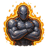
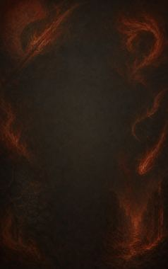
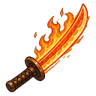
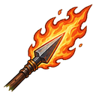
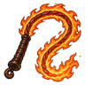
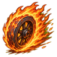
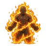
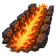
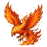

Ironhide C/B
Harden the skin to iron for an hour. The B rank is near-impervious.
| Rank | Chakra | Cooldown | Class level |
|---|---|---|---|
| C | 15 | 83 s | 3 |
| B | 30 | 83 s | 10 |

Technique trees › Clans and bloodlines
9 techniques · Clan tab
Needs the Airontoku gene.

Harden the skin to iron for an hour. The B rank is near-impervious.
| Rank | Chakra | Cooldown | Class level |
|---|---|---|---|
| C | 15 | 83 s | 3 |
| B | 30 | 83 s | 10 |

Heat a blade until it glows for half an hour of burning cuts.
| Rank | Chakra | Cooldown | Class level |
|---|---|---|---|
| C | 15 | 50 s | 4 |

Hurl a lance of fire. Inferno Bolts fire a rapid volley instead.
| Rank | Chakra | Cooldown | Class level |
|---|---|---|---|
| C | 20 | 12 s | 5 |
| B | 30 | 15 s | 10 |

Lash one enemy with a whip of fire.
| Rank | Chakra | Cooldown | Class level |
|---|---|---|---|
| C | 20 | 15 s | 6 |
A wave of searing heat rolls across a wide arc.
| Rank | Chakra | Cooldown | Class level |
|---|---|---|---|
| C | 25 | 25 s | 7 |
| B | 40 | 30 s | 11 |

Roll through everyone in the way as a wheel of fire.
| Rank | Chakra | Cooldown | Class level |
|---|---|---|---|
| B | 30 | 20 s | 9 |

Wreathe the body in flame for a minute, burning anyone close.
| Rank | Chakra | Cooldown | Class level |
|---|---|---|---|
| A | 45 | 100 s | 13 |

A long corridor of fire burns everything in a line.
| Rank | Chakra | Cooldown | Class level |
|---|---|---|---|
| A | 60 | 67 s | 15 |

S-rank: a phoenix of fire dives onto the target.
| Rank | Chakra | Cooldown | Class level |
|---|---|---|---|
| S | 90 | 200 s | 18 |